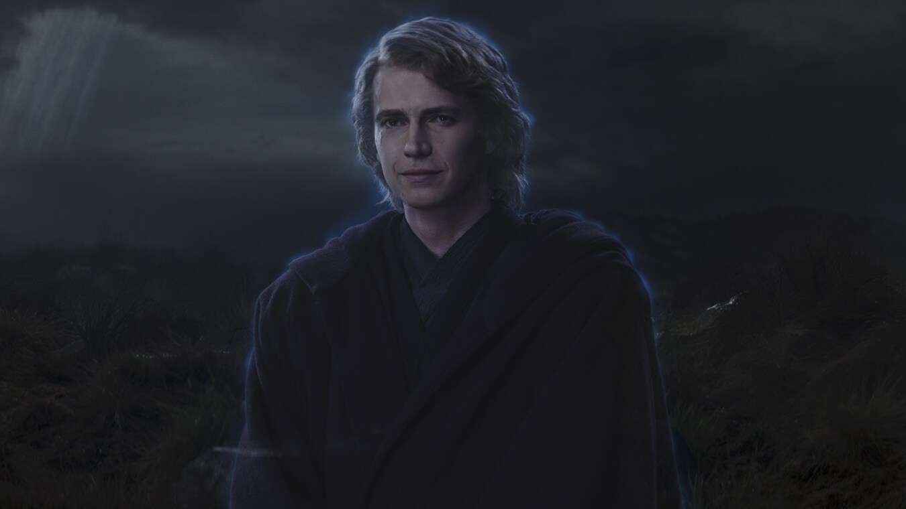
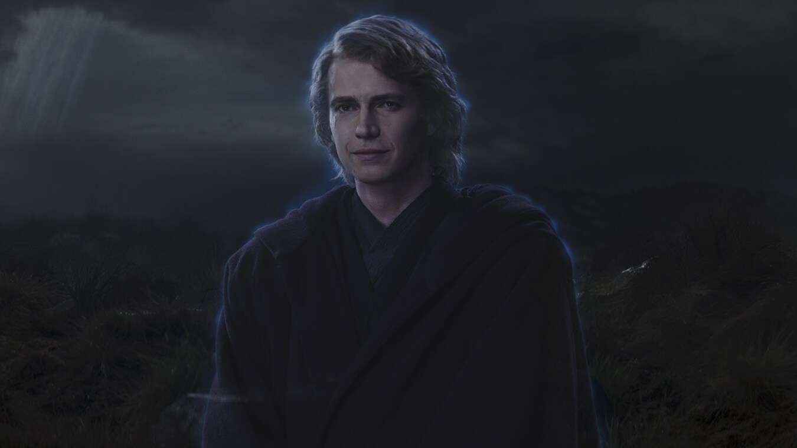

Qui-Gon-Jinn

Obi-Wan Kenobi
Anakin Skywalker

Darth Maul
Padmé Amidala
*The Phantom Menace* introduces a young Anakin Skywalker and the rise of the Sith. Jedi Knights Qui-Gon Jinn and Obi-Wan Kenobi are sent to protect Queen Amidala of Naboo from the Trade Federation’s invasion. During their mission, they encounter the Sith Lord Darth Maul, who is hunting them. Meanwhile, Qui-Gon discovers Anakin's potential in the Force and believes he may be the Chosen One destined to bring balance to the Force. As the battle for Naboo intensifies, the future of the galaxy becomes uncertain.
Qui-Gon-Jinn
Obi-Wan Kenobi
Anakin Skywalker
Darth Maul
Padmé Amidala

Naboo
Tatooine

Alderaan